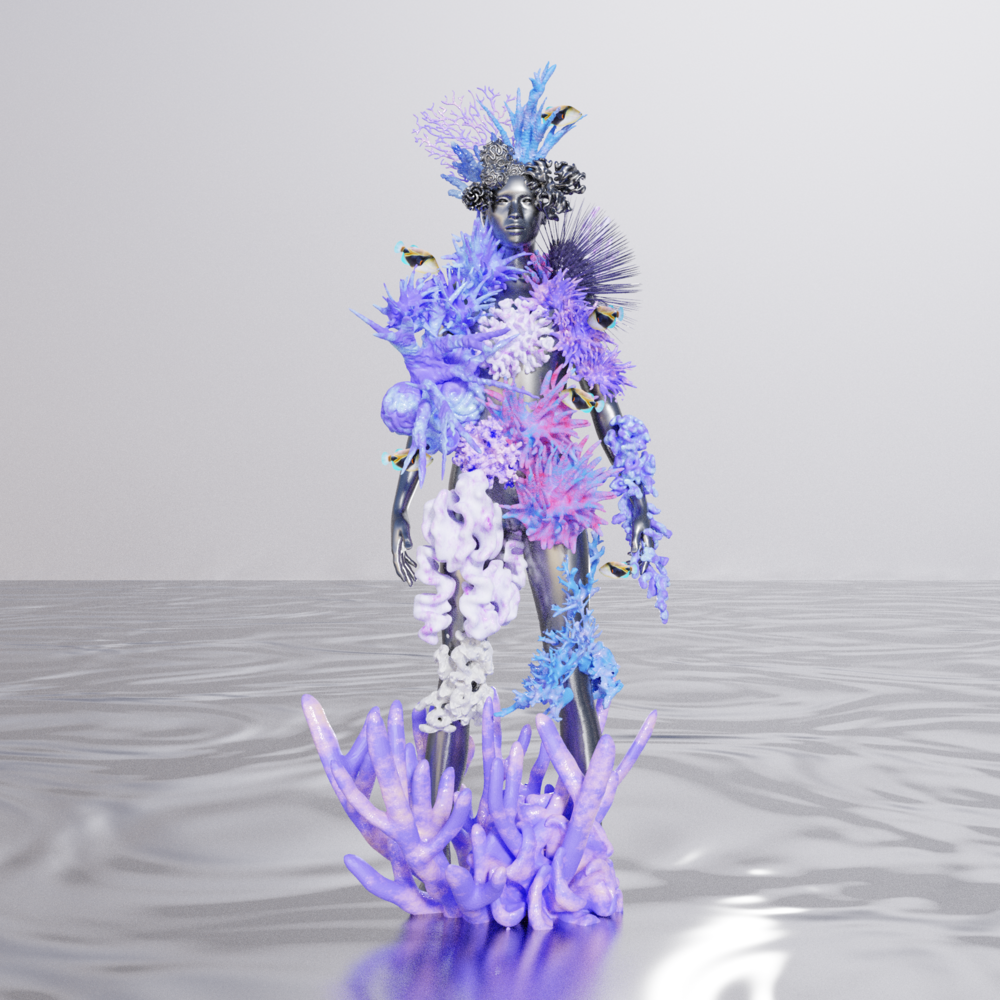
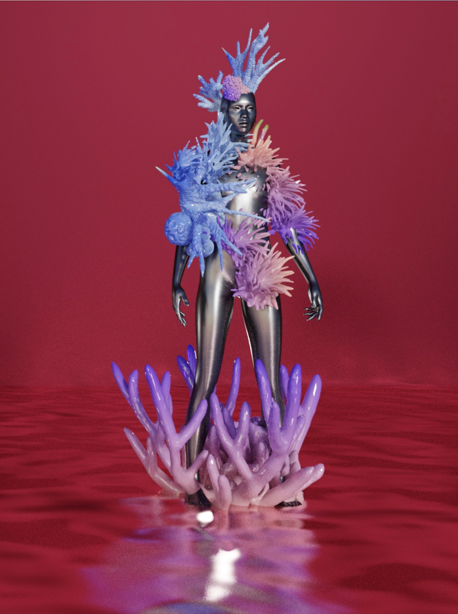

2021, ongoing
“Nakili” is a collaborative Augmented Reality sculpture co-designed by Tiare Ribeaux and Qianqian Ye.
Try Nakili now on Instagram.
Nakili pulls inspiration from the living deity Hina 'opuhala ko'a, goddess of corals and spiny creatures in the ocean. One of the many forms of the goddess Hina, (“Hina of the Coral Stomach”), a shell from her reef was fashioned by Maui, which he used to draw together the Hawaiian Islands. On Nakili’s body are many coral forms found near the shores of the Hawaiian islands of which support vast amounts of marine life, but are at risk and facing bleaching due to ocean temperature rise, global warming, and the toxins found in many sunscreens worn by visitors to the islands. Nakili positions the corals above water, merging it with a human-like figure, to remind us of our interconnection to it and to all living creatures in the ocean, of which the Kanaka Maoli are descended from (according to the Kumulipo creation chant).
Nakili is part of a larger series of ongoing augmented reality installations called “Kai-Hai” - utilizing transpacific stories, oral histories and folklore from Hawai’i throughout Polynesia to East Asia - to explore environmental issues, Kanaka Maoli and other indigenous narratives, migratory paths, immigrant narratives and diaspora across the ocean.
Nakili means: to glimmer through, as light through a small opening; to begin to open, as eyes of a young animal; to twinkle. (via Nā Puke Wehewehe - ʻŌlelo Hawaiʻi)
Time: 2021, ongoing
AR
Alternative Narrative
Rendering
 Copyright © Qianqian Ye